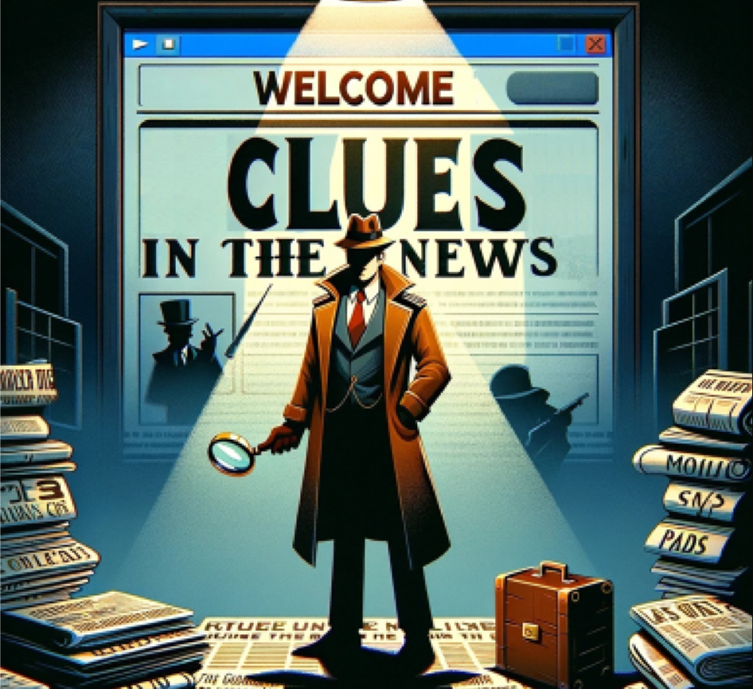

Selected work
Browse projects
Choose a topic to narrow the list. Open a project to see the full story, demo, or publication.

06Game-based · Stealth assessment Clues in the News A news-analysis game for making critical thinking visible through play. View projectNo projects match this topic yet.
Read the concept, process, and design notes
Somewhere Along the Way
Use AI. Keep your curiosity, creativity, and connection to the world.
Concept: staying connected while using AI
My original postcard shows two worlds sharing one image. On the left, a robotic hand reaches through a blue technological space beneath the words “USE AI FOR EVERYTHING. They said.” On the right, a person sits on books beside a warm landscape. The books name critical thinking, creativity, curiosity, and humanity. Above the landscape, the postcard says, “But somewhere along the way, we stopped thinking.” This interactive project brings that tension into a world that responds to the visitor's decisions.
The concept is that we should use AI without becoming overly dependent on it. AI can help with tasks and offer useful guidance. However, when we give it every decision, question, and creative opportunity, we may leave less room for our own participation. In this project, nature represents both the living world around us and the human capacities named on the books. Moving away from nature is a metaphor for losing contact with curiosity, reflection, imagination, and direct experience.
The motivation is to make that concern visible through interaction. The visitor can choose full delegation, independent exploration, or AI guidance. Each choice directly changes the state of the whole scene and the surrounding webpage. These three states make different relationships between the technological space and the landscape visible immediately. The project does not propose a fixed number of acceptable AI uses. Its question is whether assistance is leaving us actively involved.
Process: turning the postcard into a system
The scene preserves the postcard's main visual elements: the blue technological world, the reaching robotic hand, a seated human figure, the books, and a forest beside water and mountains. The environment is drawn with p5.js shapes, so its boundaries and positions can change while the visitor watches. The original image becomes an unfolding relationship rather than a fixed composition.
Choosing “Let AI do it for me” covers the entire scene with the blue technological world. The surrounding webpage also takes on a blue cover, while its text and controls remain readable. The robotic hand occupies the digital environment, and the person remains visible on the books. This exaggerated state represents handing over everything, rather than suggesting that one ordinary use of AI causes harm.
Choosing “Explore for myself” removes the digital cover and fills the scene with nature. The webpage takes on green and warm landscape colors. Choosing “Ask AI to guide me” creates a balanced composition: technology occupies one side while nature remains visible on the other. This state represents assistance that leaves room for human participation. Its equal visual split is a design metaphor, not a recommendation to use AI exactly half the time.
The transitions are reversible. Visitors can compare the three worlds in any order and use the reflection button to review their choices. The human figure has a more detailed face, thoughtful posture, jacket, bent legs, and shoes. Keeping the person visible in every state emphasizes that the question concerns our relationship with technology, rather than whether humans disappear from the world.
Stumbling blocks and design responses
A central challenge is avoiding a message that treats all AI use as harmful. If every interaction with AI made the environment worse, the system would contradict the idea of using AI thoughtfully. Separating delegation from guidance addresses that problem. Another challenge is making the metaphor understandable without presenting it as scientific evidence. The changing boundary is an authored illustration of dependence, not a calculation of intelligence, creativity, or an individual's actual relationship with technology.
There is also a tension between visual simplicity and meaningful action. Selecting a button does not demonstrate deep reflection. Here, selecting exploration stands for choosing to attend and is accompanied by a reflective message. The rules are intentionally limited so that visitors can understand the relationship between their choices and the scene. These are design considerations, not findings from a user study.
Breakthrough: assistance can lead us back
The key design insight is that AI can point toward the world instead of taking our place in it. The guidance state keeps both the technological world and the natural world visible. AI has a place, while the person retains room for curiosity and judgment. This makes the project more than a choice between accepting and rejecting technology. It creates room for a relationship in which assistance and human participation coexist. The ability to reverse the visual separation also matters: the story offers a way to reconnect.
Connections to the readings
Smed, Suovuo, Skult, and Skult (2021, pp. 4–6) distinguish the storyworld designed by a creator from the particular story experienced through an interactor's participation. Here, the designer establishes the landscape, available actions, and consequences. The visitor creates a particular sequence: full delegation, independent exploration, a balanced use of guidance, or movement among these possibilities. The narrative is expressed through changes in the world as well as through text.
Tsing's (2015, chapter 1) arts of noticing offers a complementary connection. Her discussion asks readers to attend to lives and relationships that dominant stories of progress can overlook. This project adapts that invitation by making space for observation within an environment shaped by technological convenience. Tsing's argument concerns ecological and social relationships; applying it to AI overreliance is an interpretation developed for this project, not a claim she makes about AI.
The procedural meaning comes from the rules: full delegation covers the landscape, independent exploration restores it, and guidance preserves a visible place for both worlds. The visitor experiences these relationships through choices. The final reflection returns to the postcard's concern: a healthier future needs human thinking. AI can be part of that future while we continue to notice, question, create, and connect for ourselves.
References
- Smed, J., Suovuo, T., Skult, N., & Skult, P. (2021). Handbook on interactive storytelling. Wiley. Chapter 1, supplied course excerpt.
- Tsing, A. L. (2015). The mushroom at the end of the world: On the possibility of life in capitalist ruins . Princeton University Press. Chapter 1: Arts of Noticing.
“USE AI FOR EVERYTHING.”
They said. But somewhere along the way, we stopped thinking.
Choose a relationship with AI. “Let AI do it for me” turns the scene fully blue. “Explore for myself” fills it with nature. “Ask AI to guide me” brings both worlds into balance. The webpage changes with your choice.
AI guidance is scripted. This is an artistic metaphor about overreliance, not a measurement of intelligence or a recommended limit on AI use. Nothing is stored or sent.
LegalMind
An intelligent platform designed to enhance law students' critical thinking through AI-supported case analysis. The tool uses stealth assessment to measure and scaffold legal reasoning skills without disrupting the natural learning flow. Features a rubric-guided AI evaluation system and personalized feedback engine.
ProductiveMath
PI: Dr: Seyedahmad Rahimi
A human-in-the-loop generative AI web application enabling teachers to create algebra problems that support productive failure pedagogy. Compares small vs. large language models for problem quality, uses a custom rubric for automated assessment. Recognized with a Best Paper Nomination at AIED 2025, Palermo, Italy.
SmarterFlash
A generative AI-powered adaptive flashcard application studying self-regulated learning. Research explored how students balance AI automation with personal agency in knowledge review — revealing that learners spend significant cognitive energy preparing rather than passively consuming AI-generated content. Presented at ICLS 2026, Irvine, CA.
Metalingual
Co-designed an AI-powered platform for enhancing English language learning with a focus on TOEFL speaking preparation. Integrated AI-driven personalized instruction and feedback loops. Conducted user testing to refine functionality and improve user engagement. Presented at AECT 2024, Kansas City.
This project is a prototype. For more information, visit the project website.
Visit Project Website →Clues in the News
Designed a game-based stealth assessment system that measures K-12 students' critical thinking skills through news analysis tasks — without students knowing they're being assessed. The system embeds assessment seamlessly into learning activities, eliminating test anxiety while gathering rich performance data.